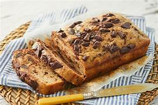

S&B Chocolate Chip Bannana Bread
This wont last long, serve warm with butter

Delicious Bannana Bread
Ingredients
Directions
Chocolate Chip Bannana Bread Recipe
Prep Time 15 minutes
Cook Time 50 minutes
Ingredients
List
Directions
Preheat oven to 350 degrees